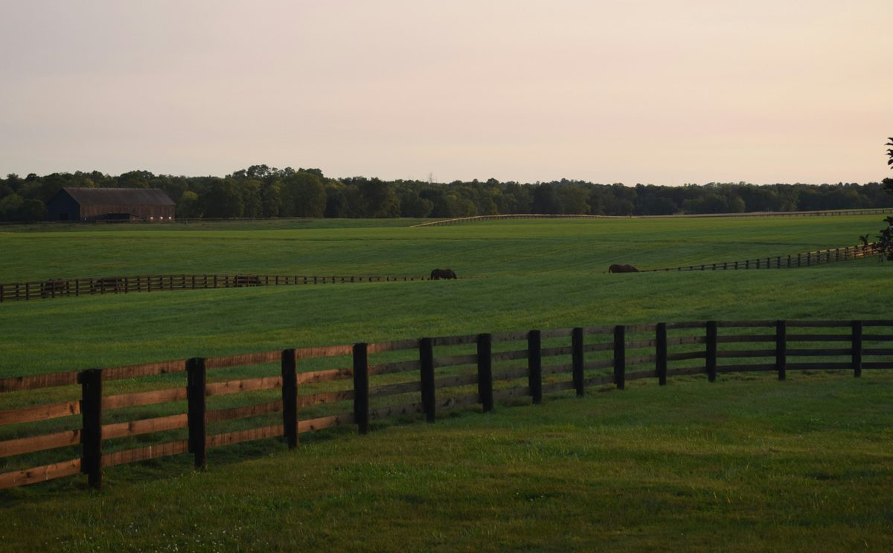

Bourbon country built visitor campuses. Moving guests across them is the next thing to build.
Kentucky Bourbon Trail visits went from about 1.3 million in 2019 to 2.7 million in 2025. Distilleries became campuses, and the walk between buildings now shapes tour capacity and who can take the tour.
In 2025, the Kentucky Bourbon Trail® welcomed 2.7 million visitors, matching the record set the year before. In 2019, it welcomed about 1.3 million. (Kentucky Distillers' Association, April 2026; Office of the Governor, 2021)
Some of that growth is the Trail itself getting bigger. When it launched in 1999, there were seven distilleries in Kentucky a visitor could tour. Today there are nearly 70 participating destinations, 11 of them added in 2025 alone. (KDA, April 2025; KDA, April 2026) But the destinations grew too. A distillery tour used to mean a still, a warehouse, and a tasting. It now means a campus.
"Holding strong at 2.7 million visitors is a tremendous win in today's tourism climate," said Eric Gregory, president of the Kentucky Distillers' Association, when the 2025 numbers came out.
It is. And it raises a question the industry is already starting to answer, one property at a time: once you've built a campus, how do your guests get across it?
A distillery is now a destination
Look at what the leading houses have built.
Heaven Hill opened the Heaven Hill Bourbon Experience in Bardstown in 2021, a $19 million investment that tripled its previous footprint to more than 30,000 square feet and can host more than 900 guests at a time. The visitor center it replaced welcomed about 60,000 people a year. (Office of the Governor, 2021) In 2025, the company opened Heaven Hill Springs, a distillery that cost more than $200 million to build. (Spectrum News 1, September 2025)
Maker's Mark has opened tours and experiences across Star Hill Farm, the 1,100 acres of land in Loretto where its bourbon is made. "In the past, our guests have only been able to explore a small piece of our home at Star Hill Farm," Amanda Humphrey, the farm's advocacy and experience manager, said when the new experiences launched. (Distillery Trail, July 2023)
Buffalo Trace in Frankfort reported more than 340,000 visitors in 2021, up 556 percent since 2010. That is the most recent year the distillery has published. (Fred Minnick, January 2022) Across the state line, about 300,000 people a year tour the Jack Daniel's distillery in Lynchburg, Tennessee. (Jack Daniel's press room)
These are not tasting rooms. They are hospitality operations on the scale of a small resort, built around working production sites that were never laid out with visitors in mind.
The distilleries already know the walk is the hard part
You don't have to guess at the movement problem. The distilleries describe it on their own websites, and many have already started solving it.
Some already run transport on property. Maker's Mark tells visitors there is "a shuttle to help transport you from the Homeplace down to the heart of campus." (Maker's Mark FAQ) Heaven Hill invites guests to "take a shuttle to our brand new cutting-edge distillery." (Heaven Hill Bourbon Experience FAQ) At Bulleit's Shelbyville site, "guests will board a bus and take a short drive to the production side." (Kentucky Bourbon Trail)
Others split arrival from the experience. At Woodford Reserve, "check in is located at the Gristmill House, on the opposite side of McCracken from the Visitor Center." The same page notes "32 steps on the tour path," summer temperatures that "may be very hot with temperatures exceeding 90 degrees," and an elevator to assist guests as needed. (Woodford Reserve, Plan a Visit)
And some of the best experiences are the hardest to reach. Buffalo Trace's Hard Hat Tour route "includes stairs, elevated grated flooring, tight corridors, continuous walking," and the distillery lists it as not ADA accessible. (Buffalo Trace) Jack Daniel's tells guests that tours "are partly outdoors and may involve walking and stairs," recommends walking shoes, and does not permit strollers on tours. (Jack Daniel's Tour FAQ)
None of that is a criticism. Rickhouses sit where the air moves well, stillhouses sit where the water and the rail lines were, and a working distillery has forklifts and barrel traffic that guests should stay clear of. The campus is spread out for good reasons. The point is that the guest experience now depends on how people cross it.
Capacity is set by the tour, and the tour is set by movement
Ask a distillery where its ceiling is, and the answer is usually the tour schedule.
Jim Beam warns that tours "can sell out, especially on weekends and during peak travel seasons." (Jim Beam) Maker's Mark says it books tours about six weeks out. (Maker's Mark FAQ) Woodford Reserve opens reservations on a rolling 90-day window. (Woodford Reserve)
A tour is a group moving through a sequence of buildings on a fixed clock. Every minute spent walking between the visitor center and the stillhouse, or waiting for a vehicle that holds a fraction of the group, is a minute the next group can't start. When transport between stops holds the whole group at once, groups move on a predictable cadence, and the schedule can carry more of them. When it doesn't, the slowest leg of the walk sets the pace for everyone.
That makes on-property transport a capacity decision, not just a convenience.
Who the walk leaves out
About 80 percent of Bourbon Trail visitors come from outside Kentucky, and groups spend between $600 and $1,400 per trip. (KDA, April 2026) These are destination travelers who planned the trip, booked the tour weeks ahead, and drove in from out of state.
Some of them are older. Some are traveling with a parent who uses a cane, or arrived on a hot July afternoon after two other distilleries that morning. The experiences that ask the most of their legs, the rickhouse climbs and the production walks, are often the ones that sell the premium ticket. A guest who can't comfortably make the walk doesn't buy that ticket, and a group that includes that guest often doesn't either. It's the same pattern we've seen on other large properties: the demand is already there, and the friction is eating it.
Transport that is accessible by default, with a vehicle built for a mixed group rather than a separate arrangement made by phone, keeps those guests in the experience and in the gift shop afterward.
Planning visitor capacity for next season?
FlexTram builds route plans around your tour schedule and supplies the vehicles to run them, on rental for peak days and release events or on long-term lease.
What a system looks like on a distillery campus
The distilleries that run shuttles today have already made the key decision: moving guests is part of the experience. The next step is treating it as a system rather than a set of individual runs.
That looks like:
- A fixed loop between the stops that matter. Parking and check-in, the visitor center, the stillhouse, the rickhouse, the tasting room, and back. Posted, predictable, and timed to the tour schedule.
- Vehicles sized to the tour group. If a tour is 25 people, a vehicle that carries the whole group keeps it together and keeps the next group on time.
- Accessibility as standard. One vehicle that works for every guest, so nobody has to call ahead or wait for a separate ride.
- The ability to leave the road. Campus paths, gravel lots, and grass are part of most distillery grounds. Vehicles that handle them can follow the guest route instead of the delivery road.
- Capacity that flexes. Bourbon tourism has a season, and big release days and festival weekends bring surges. Transport that can scale up for those days and stand down after them fits the way visitation actually arrives.
FlexTram vehicles carry up to 27 seated passengers with one driver, are ADA-compliant as standard, and run on asphalt, gravel, grass, and dirt. We plan the route alongside the tour schedule, and the same approach works for factory and facility tours and plant tours and groundbreakings elsewhere.
The tour starts in the parking lot
Bourbon country spent the last decade building places worth visiting. More than 20 million visits have been made to the Trail since it began. (KDA, April 2026) The buildings, the barrels, and the stories are all there.
The last piece is the one guests notice first and remember longest: how they got from one to the next.
A guest remembers the rickhouse. They also remember whether they got to see it.
— The FlexTram Team
Frequently asked questions
How many people visit the Kentucky Bourbon Trail?
The Kentucky Distillers' Association reports that the Kentucky Bourbon Trail welcomed 2.7 million visitors in 2025, holding steady with the record set in 2024. In 2023 it welcomed 2.5 million, and in 2019 about 1.3 million. Part of that growth comes from the Trail itself expanding: in 1999 there were seven distilleries in Kentucky to visit, and today there are nearly 70 participating destinations. About 80 percent of visitors come from outside Kentucky.
Do distilleries already provide transportation on their property?
Several do. Maker's Mark offers a shuttle from the Homeplace down to the heart of its campus. Heaven Hill shuttles guests from the Heaven Hill Bourbon Experience to its new distillery. At Bulleit's Shelbyville site, guests board a bus for a short drive to the production side. Woodford Reserve checks guests in at the Gristmill House, on the opposite side of McCracken Pike from its Visitor Center.
Why does on-property transportation affect distillery tour capacity?
A tour is a group moving through a sequence of buildings on a fixed clock. Time spent walking between stops, or waiting for a vehicle that holds only part of the group, delays the next group's start. Many distilleries already book out: Jim Beam warns tours can sell out on weekends and in peak seasons, Maker's Mark books about six weeks ahead, and Woodford Reserve opens reservations on a rolling 90-day window. Transport that carries the whole group at once keeps groups on a predictable cadence.
Are distillery tours accessible for guests with limited mobility?
It varies by distillery and by tour. Jim Beam says its grounds and tours are ADA-compliant. Woodford Reserve notes 32 steps on the tour path and an elevator to assist as needed. Buffalo Trace lists its Hard Hat Tour, which includes stairs, elevated grated flooring, and tight corridors, as not ADA accessible. Jack Daniel's says tours may involve walking and stairs and does not permit strollers. Guests should check the specific tour before booking.
How would a FlexTram system work at a distillery?
FlexTram vehicles carry up to 27 seated passengers with one driver, are ADA-compliant as standard, and run on asphalt, gravel, grass, and dirt. On a distillery campus that means a fixed loop between parking and check-in, the visitor center, production buildings, rickhouses, and the tasting room, timed to the tour schedule and sized to carry a whole tour group. Vehicles are available on rental for peak days and release events, on long-term lease, or as a turnkey plan.
Related reading
Your visitors already made the trip. Get them all the way there.
FlexTram offers rentals, long-term leases, and turnkey transportation plans for distilleries, visitor centers, and facility tours.